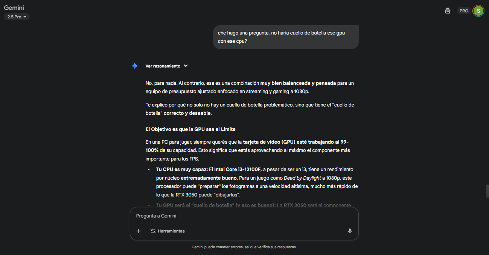
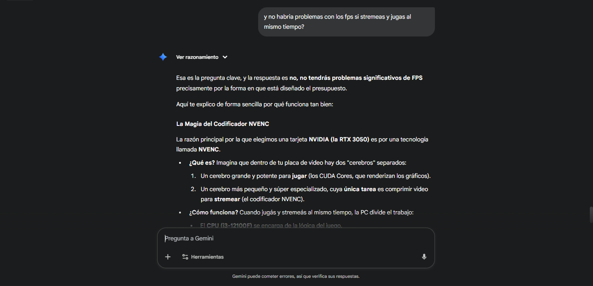
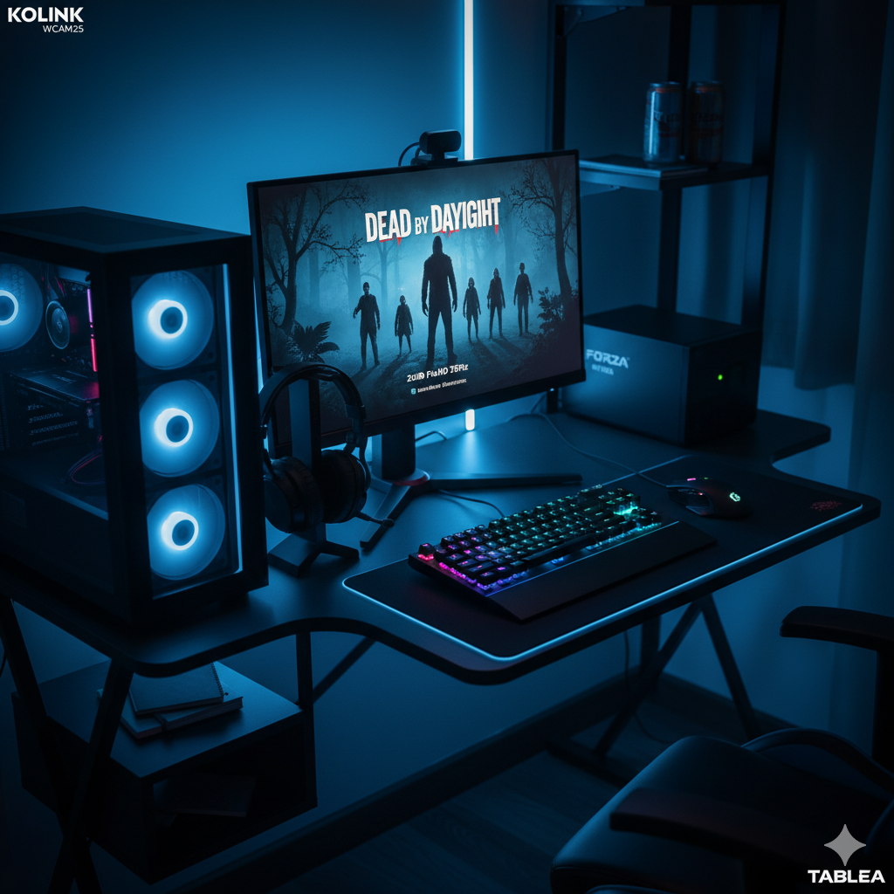

Requisitos mínimos
- [Pendiente completar]
Tema: Streaming de Videojuegos
Profesores: Bioing. Ismael Cassi – Lic. Paolo Orundés Cardinali
Integrantes del Grupo:
Comisión: 2
Fecha de Entrega: 31/10/2025
Año Lectivo: 2025
[Pendiente completar]
[Pendiente completar]
[Pendiente completar]
Precios actualizados al 17/10/2025 de tiendas oficiales argentinas.
| Componente / Descripción | Tienda | Precio (ARS) |
|---|---|---|
| Procesador Intel Core i3-12100F 4 Núcleos / 8 Hilos | FullH4rd | $145.000 |
| Placa de Video Zotac GeForce RTX 3050 8GB | Maximus Gaming | $315.700 |
| Placa Madre ASUS PRIME H610M-E D4 | Venex | $125.800 |
| Memoria RAM 16GB (2x8GB) DDR4 3200MHz PNY XLR8 | FullH4rd | $88.500 |
| Almacenamiento SSD 480GB Kingston A400 SATA | Mexx | $64.000 |
| Fuente de Poder 500W Gigabyte P550B 80+ Bronze | Gezatek | $79.999 |
| Gabinete Kolink Inspire K3 RGB Vidrio Templado | FullH4rd | $62.000 |
| Monitor 22" Philips 221V8/77 Full HD 75Hz | Mexx | $195.000 |
| Periféricos Kit Redragon S101-BA-2 (4 en 1) | FullH4rd | $59.990 |
| Webcam Gadnic WCAM25 Full HD 1080p | Gadnic | $20.000 |
| Escritorio Gamer Tables 3047 Negro/Azul | Sodimac | $110.010 |
| Protección UPS Forza NT-752A 750VA/375W | Katech | $88.840 |
| Item | Fuente | Precio (ARS) |
|---|---|---|
| OBS Studio (Software de Streaming) | obsproject.com | Gratuito |
| Windows 11 Home (sistema operativo) | https://www.microsoft.com/es-ar/d/windows-11-home/dg7gmgf0krt0 | $180.000 |
| Dead by Daylight (Juego) | Steam Store | $7.345 |
Nota: El presupuesto se encuentra dentro del límite de 1000 USD, logrando un setup completo y balanceado.
Justificación Técnica: Este setup se centra en la eficiencia para streaming con un presupuesto ajustado. El Intel Core i3-12100F fue elegido por su excelente rendimiento por núcleo, ideal para gaming. La pieza central es la RTX 3050 de 8GB, seleccionada no por su potencia bruta, sino por su acceso al codificador NVIDIA NVENC, que se encarga del trabajo pesado del streaming liberando al CPU. Esta sinergia permite jugar y transmitir de forma fluida. Los 16GB de RAM en Dual Channel son esenciales para la multitarea, y el SSD de 480GB asegura que el sistema y el juego principal carguen con rapidez.
Alternativa Descartada: Se evaluó una build basada en AMD Ryzen 5 5600G (con gráficos integrados) para eliminar el costo de la GPU dedicada. Sin embargo, se descartó porque los gráficos integrados Radeon Vega 7, aunque competentes, son insuficientes para jugar Dead by Daylight a 1080p con buena calidad y, al mismo tiempo, realizar una transmisión. La carga de renderizar el juego y codificar el stream simultáneamente sobre la misma unidad gráfica integrada resultaría en un rendimiento muy bajo y una experiencia de streaming inaceptable.
FPS aproximados para Dead by Daylight (mientras streameas): Con la configuración del i3-12100F y la RTX 3050, jugando a 1080p con ajustes gráficos en "Alto", se puede esperar un rendimiento estable de entre 60 y 75 FPS. Al utilizar el codificador NVENC, el impacto en los FPS es mínimo, garantizando que el juego se mantenga fluido y jugable durante la transmisión en vivo.
Calidad y Resolución de Transmisión Estimada: El hardware es perfectamente capaz de realizar una transmisión de calidad a 1080p y 30 FPS o, para mayor fluidez, a 720p y 60 FPS, lo cual es ideal para un streamer que está comenzando.
Reflexión sobre Interacción 1:
Basicamente aca la IA me responde la duda que yo tenia acerca de si se podia generar un cuello de botella por tener un intel I3, pero me aclara que al ser el 12100F, cuenta con todo lo necesario para que puedan trabajar bien con la GPU.

Reflexión sobre Interacción 2:
Esta es otra de las dudas que tania, que es de lo mas importante, si podia haber bajones de FPS por hacer ambas cosas al mismo tiempo, pero la computadora cuenta con todo lo neecsario para realizar ambas tareas al mismo tiempo sin problemas y una de las principales razones es la tecnologia de la RTX 3050.

Se solicitó a la IA una tabla comparando el procesador elegido (Intel Core i3-12100F) con la alternativa de AMD utilizada por otros compañeros (Ryzen 5 5500).
| Característica | Intel Core i3-12100F | AMD Ryzen 5 5500 |
|---|---|---|
| Arquitectura | Alder Lake | Zen 3 |
| Núcleos / Hilos | 4 Núcleos / 8 Hilos | 6 Núcleos / 12 Hilos |
| Frecuencia Turbo Máx. | 4.3 GHz | 4.2 GHz |
| Caché L3 | 12 MB | 16 MB |
| Versión PCIe | PCIe 5.0 | PCIe 3.0 |
Fuentes para Validación:
Comentario Final: La información de la IA coincide con las fuentes oficiales. Aunque el Ryzen 5 5500 tiene más núcleos, mantengo la elección del Intel Core i3-12100F. La razón es estratégica: su rendimiento por núcleo es superior gracias a una arquitectura más moderna, lo que beneficia directamente a los FPS en los juegos. Como la tarea del streaming será manejada por el NVENC de la GPU, no necesito los núcleos extra del Ryzen. Esto me permite tener una mejor experiencia de juego con un procesador más económico, optimizando así el presupuesto general.
¿Qué es un cuello de botella (bottleneck) en una PC?
Respuesta de la IA: Un cuello de botella ocurre cuando un componente de la PC es significativamente más lento que los demás, limitando el rendimiento general del sistema. Es como un embotellamiento en una autopista de varios carriles que de repente se reduce a uno solo. No importa qué tan rápidos sean los otros componentes; el rendimiento máximo estará dictado por la velocidad del componente más lento. En gaming, un cuello de botella común es cuando un procesador (CPU) no es lo suficientemente rápido para enviar datos a una tarjeta gráfica (GPU) potente, haciendo que la GPU no trabaje a su máxima capacidad y se pierdan FPS.
Mi explicación en "lenguaje común": Básicamente, un cuello de botella ocurre cuando uno de los componentes de la PC es notablemente más lento que los demás y, por lo tanto, limita el rendimiento general de todo el sistema. Es como un embudo: no importa cuánta agua intentes pasar, la velocidad siempre estará limitada por la parte más estrecha.

Título: El Comienzo del Creador
Prompt Usado: "Un setup de PC para streaming de un principiante, en una habitación de noche. El escritorio de madera tiene una torre de PC Kolink con una sutil luz RGB azul en el frente. El monitor muestra una escena del videojuego 'Dead by Daylight'. Unos auriculares, teclado y mouse Redragon están sobre el escritorio. La atmósfera es realista y enfocada, con una iluminación limpia y moderna. Estilo fotorrealista, cinematográfico, 8k."
Explicación del Mensaje Transmitido: La imagen busca transmitir realismo y accesibilidad. Representa un espacio funcional y ordenado que no necesita ser extravagante para ser profesional. El mensaje es que el punto de partida en el streaming no requiere una inversión masiva, sino una elección inteligente de herramientas para enfocarse en lo que importa: el contenido y la pasión por el juego. Es una invitación a empezar, demostrando que un setup potente y estético está al alcance de un presupuesto bien planificado.